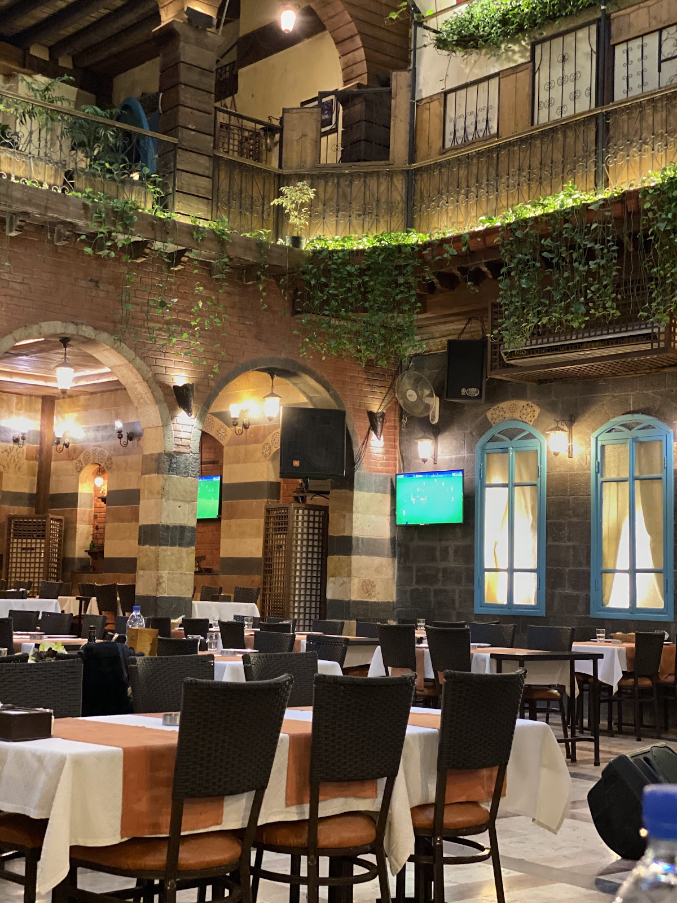
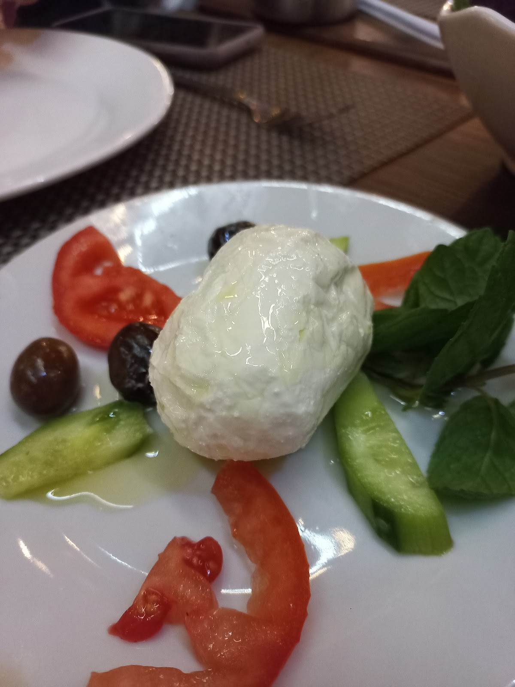
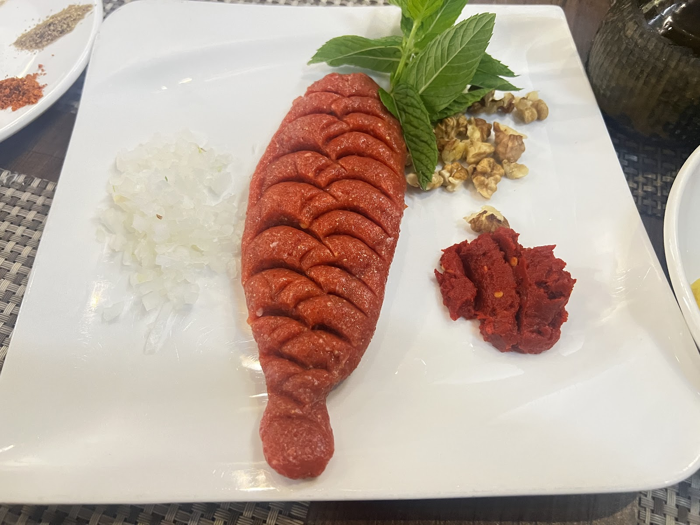
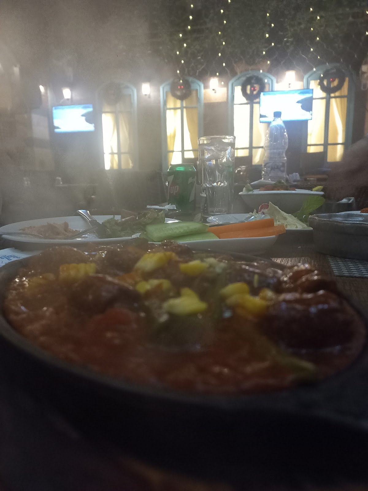
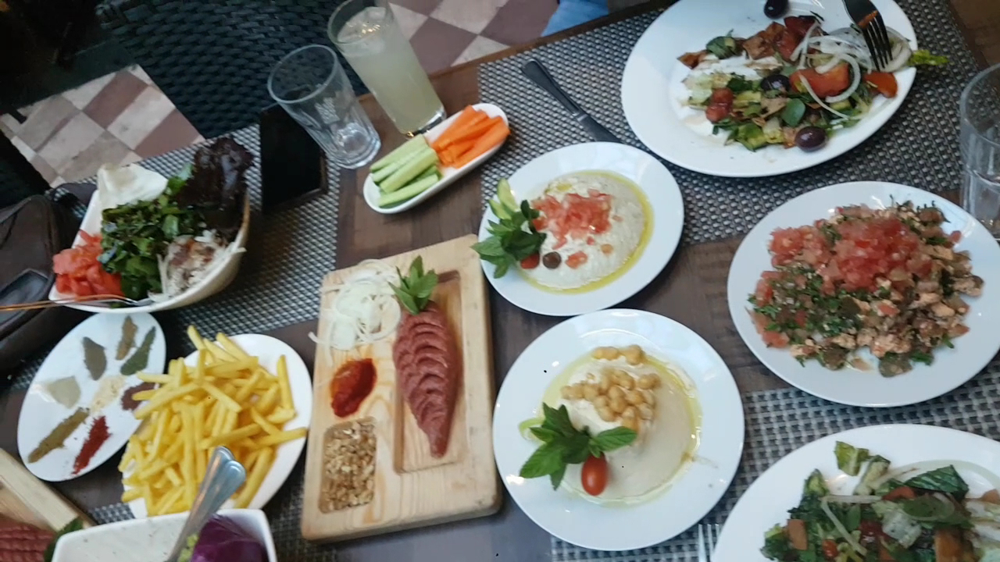
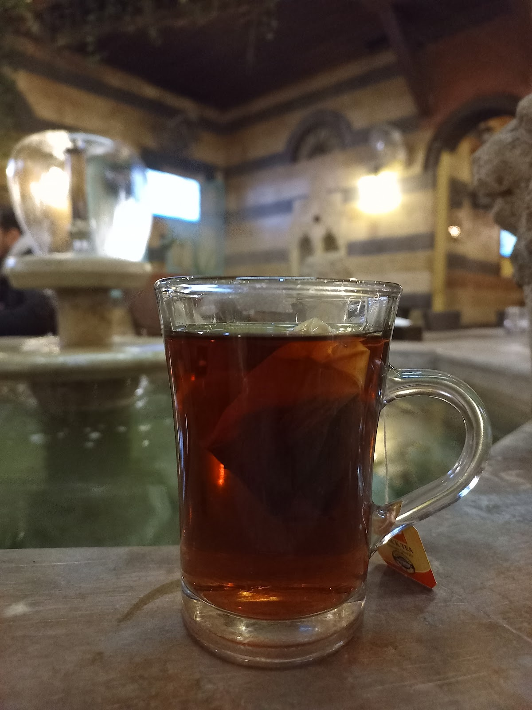

ضو السما بينزل من السقف الزجاجي على النخلة والبحرة — وسفرة شامية عالمهل، من الضحى لبعد نصّ الليل.Daylight falls through the glass roof onto the palm and the fountain — and a Damascene table taken slowly, from mid-morning till past midnight.
البيوت الشامية القديمة لما بتتسقف بالزجاج، حوشها بيصير صالوناً مضوّياً طول السنة. هيك هي سيلينا — نخلة واقفة تحت السقف، بحرة صوت ميّتها بيهدّي الجلسة، وحيطان حجر قديمة بتحفظ برودة الصيف ودفا الشتا.When an old Damascene house is roofed in glass, its courtyard becomes a bright salon all year round. That is Selena — a palm standing under the skylight, a fountain whose water calms the table, and old stone walls that hold summer's cool and winter's warmth.
الضيافة هون بتبلّش من أول خطوة: أهلين، وكرسي، وكاسة شاي — وبعدها السفرة بتفتح على مهلها. بالنهار بتسمعوا خرير البحرة، وبالليل القعدة بتطول لبعد نصّ الليل، والضو الدافي بيضل نازل من فوق.Hospitality begins at the first step: a welcome, a chair, a glass of tea — then the table unfolds at its own pace. By day you hear the fountain trickle; by night the sitting stretches past midnight, warm light still falling from above.


لبنة بزيت الزيتون ومكدوس عالطريقة الشامية — فطور وترويقة بطعم المونة القديمة.Labneh in olive oil and makdous the Damascene way — breakfast with the taste of the old pantry.

سجق مقلي عالسخن وصحون بتوصل وريحتها قبلها — مازة بتفتح النفس.Sujuk fried and served hot, plates whose aroma arrives first — mezze that opens the appetite.

خابرنية وأطباق بتوصل عالطاولة وهي عم تغلي — ومعها شيش طاووق ودجاج مشوي عالمهل.Khaberniya and dishes that reach the table still bubbling — alongside shish tawook and slow-grilled chicken.


"My friend came on our first night in Damascus and we were instantly greeted with the best hospitality. The atmosphere was beautiful and the music and ambience was perfect. We ordered khaberniya, shish tawook and a grilled chicken."
"This place was so lovely and comfy to relax specially with the sound of water, the food was delicious. It is a great choice if you love old Damascus places."
"The food is good and the vibes are great. The place is cozy and comfortable at day time where you can enjoy the fountain and relaxing water sound."
★ 4.1 / 5 — 131 تقييم على غوغلGoogle reviews
| يومياًDaily | 10:00 – 1:00 بعد منتصف الليل10:00 – 1:00 after midnight |
الدوام من لائحة غوغل — للطاولات الكبيرة اتصلوا قبل.Hours as listed on Google — for large tables, call ahead.
باب توما — دمشق القديمة
للحجز والاستفسار:For bookings & questions: +963 11 542 4759
اتصلوا فيناCall us افتحوا الخريطةOpen in Maps